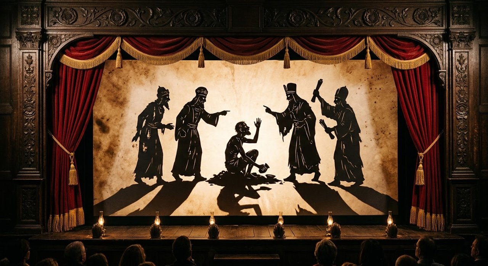

Job 3–31: Job and His Three Friends
The failure of Job's friends to comfort him in his affliction, rather than accuse him in their hypocrisy.
✦ ✦ ✦Use the arrow keys or swipe to move. Tap any reference to read the verse.

Part 2: Job and his three friends
So, to recap: Job, devastated by the loss of his children, wealth and health, and wishing he was never born, while yet not sinning against God or cursing Him, sits in ash, scraping his sore-covered flesh, in agony.
He had been blessed by these three well meaning friends, who traveled afar, and patiently, in love, sat mourning in silence for a week.
The three cycles of speeches
Job 4 will begin a dialogue between Job and the three friends who came to him to mourn.
| Cycle | Eliphaz | Bildad | Zophar |
|---|---|---|---|
| First | 4–5 · Job 6–7 | 8 · Job 9–10 | 11 · Job 12–14 |
| Second | 15 · Job 16–17 | 18 · Job 19 | 20 · Job 21 |
| Third | 22 · Job 23–24 | 25 · Job 26–31 | — |
Eliphaz the Temanite, Bildad the Shuhite and Zophar the Naamathite, each answered by Job. Job's lament (chapter 3) opens the dialogue; Job's closing discourses and defense (26–31) end it.
Let the day perish
Let the day perish wherein I was born, and the night in which it was said, There is a man child conceived.Job 3:3
In Job chapter 3, the titular character begins a monologue of absolute dejection and woe.
He wishes he was never born. He asked why he didn't die in the womb rather than suffer as he is. He wishes for death, that Kings and princes and the wicked and the weary all find rest in, from this life. That the prisoners of death escape the voice of their oppressor and the servant is free from his master.
He is miserable
Wherefore is light given to him that is in misery, and life unto the bitter in soul; Which long for death, but it cometh not; and dig for it more than for hid treasures;Job 3:20-21
He asked why light is given to him that is in misery, why life is given to the bitter in soul, why those who long for death don't receive it.
He poetically compares the digging for hidden treasure to those that can find the grave. He is miserable.
But he has not sinned against God with his lips.
The first cycle
Eliphaz the Temanite
The first to reply to Job's plaintive cry, cursing the day he was born, is Eliphaz the Temanite, of Teman, a city in Edom.
His initial argument is made in chapters 4 and 5, and offers a view of “retribution theology,” the idea of karma in God's doings. That sin is the cause of suffering, and that you get what you deserve.
Retribution theology
This line of thought is just as common today as it was then, and is human nature. But not God's.
The end of the matter
And it was so, that after the Lord had spoken these words unto Job, the Lord said to Eliphaz the Temanite, My wrath is kindled against thee, and against thy two friends: for ye have not spoken of me the thing that is right, as my servant Job hath.Job 42:7
So, before we dive deeper into the text, we should keep in mind the end of the matter, where (spoilers), God addresses the men and what they say.
As we go, it is good to keep this in mind, especially when we read something that seems perfectly reasonable to us, and may reflect our own views that we may have held against others in our life. It should cause self-reflection.
Who can withhold himself?
If we assay to commune with thee, wilt thou be grieved? but who can withhold himself from speaking?Job 4:2
He starts by asking that, if they attempt to talk with him, will it offend Job? And then immediately, before Job can answer, Eliphaz gives himself permission by saying “Who can withhold themselves from speaking?”
As well intentioned as this sentiment can be, what follows it rarely is a help to the person hearing it.
Better to have remained silent than to do this.
Who ever perished, being innocent?
Remember, I pray thee, who ever perished, being innocent? or where were the righteous cut off?Job 4:7
And rather than waiting for a reply to his condescending “tough love,” Eliphaz answers his own question in the least charitable way possible; by accusing Job of hidden sin. This is the crux of his argument, That Job deserves what has happened to him.
The Truth is we cannot assume by someone suffering that they deserved it for some secret sin that we imagine they did.
But we are all deserving of death and hell, and it is by the grace of God that we yet live.
True things to make false points
Shall mortal man be more just than God? shall a man be more pure than his maker?Job 4:17
His private interpretation, his own inner musings that he paints as a spiritual vision, posits that since man is obviously not as holy as God, and if even the Angels were punished for their rebellion, how much more man is under judgment for our wickedness.
Again, Eliphaz uses true things to make false points.
Many times the greatest lies are based on a misrepresentation or misapplication of the greatest truths.
Call now, if there be any
Call now, if there be any that will answer thee; and to which of the saints wilt thou turn?Job 5:1
Eliphaz's monologue continues, directly from chapter 4, and he continues to paint a picture blaming Job for his own suffering. Implying secret sin that has led him to his current condition.
Some Catholics use this verse as a proof text for praying to saints. But Eliphaz is not encouraging Job to pray to the dead, but to appeal to the stories of the righteous to find if any ever suffered as he did.
Despise not the chastening
Behold, happy is the man whom God correcteth: therefore despise not thou the chastening of the Almighty:Job 5:17
So he is quoting scripture, and some of what he is saying is true. But he's misapplying it by assuming that that is the cause of his friend's misery.
And worse, he mentions children being crushed at the gate, knowing that Job's own sons and daughters were killed by a collapsing house.
Telling him to hear it now and know that it's for thy own good, is the last thing Job needs to hear.
Heavier than the sand of the sea
Oh that my grief were throughly weighed, and my calamity laid in the balances together! For now it would be heavier than the sand of the sea: therefore my words are swallowed up.Job 6:2-3
Job begins his reply to Eliphaz's accusations of sin being the cause of Job's woe. Job is overcome by his faithless friend's words. That while the poisoned arrows and terrors of God be in him and against him, Eliphaz chose to lecture Job instead of pitying him.
They may be true, but they are obvious truths that Job is already well aware of. They aren't great insights, and they do nothing to help him in his grief.
The Holy One
Then should I yet have comfort; yea, I would harden myself in sorrow: let him not spare; for I have not concealed the words of the Holy One.Job 6:10
Here, Job gives his confession of faith, his trust in the Holy One, Christ Jesus. He is his strength and his hope. If his end is heaven, why prolong his life?
There is no anachronism when we see Christ in the Old Testament. It is entirely about Him. He is the Lamb slain before the foundation of the world.
The Old Testament saints were saved by the same faith, looking to the same Savior, the same redemption, if through a veil that has now been torn.
A deceitful brook
My brethren have dealt deceitfully as a brook, and as the stream of brooks they pass away;Job 6:15
And so, Eliphaz's rebuke stings, rather than the comfort of pity, and Job points out this is sin, and turns the accusation back upon Eliphaz, that his erstwhile friend has forsaken the fear of God by his callousness.
That his brother has dealt deceitfully, and gives an allegory of a brook, a small stream that freezes cold in the winter, undrinkable, only to vanish in the heat, dried up. It's a stinging rebuke.
Like the days of an hireling
Is there not an appointed time to man upon earth? are not his days also like the days of an hireling?Job 7:1
Job continues his defense following Eliphaz's unsympathetic advice. He returns to the theme of chapter 3, where his lamentations for this life are a reflection of the misery he is in. He asks, aren't all men appointed to death? Reminiscent of .
We all can relate, especially the older we get, to this wearisome, repetitive life. We go to sleep waiting for the day to come, waking restlessly at the dawn in anticipation for another day of toil.
I will not refrain my mouth
Therefore I will not refrain my mouth; I will speak in the anguish of my spirit; I will complain in the bitterness of my soul.Job 7:11
He's saying I have a right to complain, and has an expectation of sympathy that he hasn't received since opening his mouth. And yet he has not sinned against the Lord.
He confesses he's a sinner. He asks what shall I do unto the preserver of men, the Lord. He asks for that blessed pardon.
How utterly defeated he is.
Bildad the Shuhite
If thy children have sinned against him, and he have cast them away for their transgression;Job 8:4
He thinks Job is calling God unjust, when Job is actually confused as to why. And so Bildad lectures his pitiful friend.
He says the kids must have deserved it, so Job should seek to get right with God with haste, betimes.
The kids must have deserved it
This is cruel, of course, and wrong. He's judging Job's sons and daughters without knowledge, and assuming Job himself is turned from the Lord.
The spider's web
So are the paths of all that forget God; and the hypocrite’s hope shall perish: Whose hope shall be cut off, and whose trust shall be a spider’s web.Job 8:13-14
Bildad preaches the prosperity gospel, that if you're righteous you will be blessed and your life abundant. That God does bless Job that his latter end is better, it is for not cursing God in his tribulation. Not by any acts of righteousness, which also did not save him from this predicament to begin with.
He compares this to the backslidden and the hypocrite, whose hope is cut off.
Again, a holier than thou attitude, given in place of solace and mercy.
How should man be just with God?
I know it is so of a truth: but how should man be just with God?Job 9:2
And here in chapter 9, Job again replies to the admonishment of a friend against him, saying sure, this is true, but then asking the key question.
If God punishes the sinful, and no man is without sin, then any fate, even as extreme as what he's going through, is justified. Because God is just.
How can any man then be perfect before Him?
No daysman betwixt us
Neither is there any daysman betwixt us, that might lay his hand upon us both.Job 9:33
And so, Job comes to the conclusion that God destroys the perfect and the wicked alike. Bad things happen to good people, and bad people prosper. So it cannot be as Job's friends described.
His faith is in his Redeemer, and his Lord, but the only mediator between man and God, the man Christ Jesus, isn't a man yet.
That his situation is such, as he seeks to remain faithful and unwilling to curse God in his integrity, he doesn't know what he's supposed to do.
Shew me wherefore
I will say unto God, Do not condemn me; shew me wherefore thou contendest with me.Job 10:2
Job continues his lament to God. He is weary of life, bitter of soul. He would ask of God to not condemn him for asking, but to explain why. Why create man to be miserable? Why make someone, and despise them?
Here, Job isn't speaking against God's power to shape him and use him as He sees fit, even as a vessel fitted unto destruction. He just wants to know why.
Zophar the Naamathite
And that he would shew thee the secrets of wisdom, that they are double to that which is! Know therefore that God exacteth of thee less than thine iniquity deserveth.Job 11:6
Now the third of Job's friends speaks, Zophar the Naamathite. And he has quite a bit to say along the same lines as Eliphaz and Bildad.
He tells a grieving man sitting in ash with his hair plucked and skin covered in boils, who's lost everything, you deserve worse than what you've gotten. What a blow.
You deserve worse
Regardless of anything else, this is a railing accusation.
The word is nigh thee
But what saith it? The word is nigh thee, even in thy mouth, and in thy heart: that is, the word of faith, which we preach;Romans 10:8
And again he says something true, that God's ways are not our own and there are aspects to God that we can never understand. But, we can know God's judgments and His word is ever nigh to us.
And so, Zophar the Naamathite goes on a long-winded explanation about how Job just needs to repent and everything's going to be great. Prosperity gospel time.
Not inferior to you
But I have understanding as well as you; I am not inferior to you: yea, who knoweth not such things as these?Job 12:3
Job responds to Zophar the Naamathite, and his assertions that none can know the ways of God, His secret things. But this was pontificating nonsense. God reveals Himself to man in innumerable ways.
He isn't inferior to them in knowledge, and Job says they are not giving him profound arguments, but things everyone knows. Obvious truths and natural man wisdom.
Ask now the beasts
But ask now the beasts, and they shall teach thee; and the fowls of the air, and they shall tell thee: Or speak to the earth, and it shall teach thee: and the fishes of the sea shall declare unto thee. Who knoweth not in all these that the hand of the Lord hath wrought this?Job 12:7-9
Job says he's like the upright man that is scoffed at by his neighbor for calling upon God. People mocking faith is a constant in the believer's life.
Every man knows God is real and all creation testifies His wrath and nature and truth.
God controls the fates of nations, reveals secrets. He causes the people to wander in the wilderness. To grope in the dark, all to teach us of His wonderful light.
Physicians of no value
But ye are forgers of lies, ye are all physicians of no value. O that ye would altogether hold your peace! and it should be your wisdom.Job 13:4-5
Job continues his rebuke of the 3 friends-turned accusers.
Many well meaning people, afraid of sitting in silence need to fill the air with words, and those overcome by sympathetic fear, seek to project those fears of their own misdeeds onto the person suffering. Like Job's friends.
When dealing with someone in grief and inconsolably miserable, it is better to sit in silence and love them, than seek to explain away their feelings, and lecture them what to do.
Though he slay me
Though he slay me, yet will I trust in him: but I will maintain mine own ways before him.Job 13:15
We often quote the first half of this verse, to show our faith being absolute, especially in tribulation. But this is Job not only proclaiming his faith, but accepting God's judgement against him for asking, “Why?”
He asks of God two things. To lift His hand from against him, to stop the mounting evil that has befallen Job, and to answer Job's question, Why?
Job has humbled himself before the Lord, he just wants to know the cause.
There is hope of a tree
For there is hope of a tree, if it be cut down, that it will sprout again, and that the tender branch thereof will not cease.Job 14:7
He again notes the brevity of life, that the mortality of men is like a flower cut down or a fleeting shadow.
But, Job says there is hope of a tree. That even if its branches rot and the stock die in the ground while the roots still there, there is hope. A little water can bring it to bud and bring forth boughs again.
If a man die, shall he live again?
If a man die, shall he live again? all the days of my appointed time will I wait, till my change come. Thou shalt call, and I will answer thee: thou wilt have a desire to the work of thine hands.Job 14:14-15
He says that if he dies, shall he live again? But all the days of his appointed time he will wait till his change comes. This is both the change of death from flesh and the change of being resurrected into eternal life.
After the bounds of his life are come, God will call and he will answer and God will do the desire of the work of His hands, the promise of putting on incorruption.
What sadness he has. What wisdom he has in his sadness.
The second cycle
Thine own mouth condemneth thee
Thine own mouth condemneth thee, and not I: yea, thine own lips testify against thee.Job 15:6
And so, Eliphaz, the first of the men to reproach Job in his sorrow, speaks again. But we already know this isn't true.
Eliphaz says that if God doesn't put trust in His saints, in the righteous, how much worse is His wrath upon the unrighteous? And it is a true saying, as far as it goes.
A worse sinner
But to take the liberty of God, and use it to accuse his friend of being a worse sinner than they are, deserving all that he gets, is wicked.
He believeth not that he shall return out of darkness
He believeth not that he shall return out of darkness, and he is waited for of the sword.Job 15:22
The second half of Eliphaz's harangue is interesting, and worth noting. It shows an understanding of salvation and Hell for the unbeliever, even from the mouth of this bad friend.
Return out of darkness, the resurrection. The eternal life granted believers. He doesn't believe, and so awaits death as a condemned man waits for the sword.
The congregation of hypocrites. What an accurate description of Hell.
Miserable comforters
I have heard many such things: miserable comforters are ye all.Job 16:2
And isn't that the whole of the matter, the failure of Job's friends to comfort him in his affliction, rather than accuse him in their hypocrisy.
He says that if the roles were reversed, he could speak as they do, shaking his head in judgement, but he wouldn't. Job would try to assuage them.
He has been made weary and beaten down by such desolate company.
My witness is in heaven
Also now, behold, my witness is in heaven, and my record is on high.Job 16:19
He has mourned as a man mourns, and in sackcloth and dust. His prayers are earnest and sincere. He just wants to know why, and be comforted.
And in all that, the faith of Job is clear. This is Jesus and His wonderful advocacy for us sinners before the judgment of God. Job is certain of that, despite all else.
An indictment of the three, but also an appeal to Christ the mighty counsellor.
Poor Job
And where is now my hope? as for my hope, who shall see it?Job 17:15
Poor Job. He wants to die, he feels like he is, and he is surrounded by people he thought well of, and who thought well of him, and now they are mockers, surrounding him.
He cries to God that He has hidden understanding from these men, who in the past had flattered him as just. But now he is a byword, a cautionary tale in their mouths.
What a miserable creature he is, even more so at the turning of his friends.
Bildad unleashes curses
His remembrance shall perish from the earth, and he shall have no name in the street.Job 18:17
Bildad, furious at the rebuke of Job against him and the other two fairweather friends, unleashes curses against Job.
Bildad says, you dare to accuse us of being wicked? And then lists all the curses that Job has suffered as good. As the wrath of God against Job.
He deserves it
No more is it vague platitudes and misused proverbs, he is directly attacking Job, fiercely and without mercy.
Let your light so shine
Let your light so shine before men, that they may see your good works, and glorify your Father which is in heaven.Matthew 5:16
Imagine being the father of 10 goodly adult children, and losing them all at once, and then having the man you thought came to comfort, now berating you.
We are to comfort the broken hearted, with the love of God that His glory may be shown from Heaven. Not make it about ourselves.
Bildad finishes his cruel screed by accusing Job of being wicked and not knowing God. All to a broken man, laying in dirt made mud by his tears.
Have pity upon me
Have pity upon me, have pity upon me, O ye my friends; for the hand of God hath touched me.Job 19:21
After the merciless railing by Bildad, Job again offers his defense. He lists in all the ways that God has clearly set against him, and the reproach he has become to those around him. His friends, family, kin, wife. All are opposed to him in his sorry state.
Job is destroyed on every side. This is all he asked for from them. Not belaboring the obvious and accusing him relentlessly, rubbing his nose in his plight.
I know that my redeemer liveth
For I know that my redeemer liveth, and that he shall stand at the latter day upon the earth: And though after my skin worms destroy this body, yet in my flesh shall I see God: Whom I shall see for myself, and mine eyes shall behold, and not another; though my reins be consumed within me.Job 19:25-27
We know his words were preserved, forever by the power of God, and his confession of Faith in his living redeemer, his Savior, Who shall stand in the latter day upon the earth. Christ Jesus.
The resurrection is his hope and he knows he will see it come. His own eyes will witness the Lord in that day. The same blessed hope we share to this day.
If he suffered, be afraid. For the wrath of God is obviously real.
Be not rash with thy mouth
Be not rash with thy mouth, and let not thine heart be hasty to utter any thing before God: for God is in heaven, and thou upon earth: therefore let thy words be few.Ecclesiastes 5:2
Zophar the Naamathite joins in, again, and he says that all this back and forth with Job has triggered in him a need to interject, to speak with haste. He is going to proceed to give a recitation of wisdom, that is all undeniably true.
A recitation of wisdom
Despite the truth Zophar tells, the things he cannot wait to say, his timing and intent, as a reproach to Job and a counter to Job's chastisements of the froward trio, makes him a fool.
The portion of a wicked man
This is the portion of a wicked man from God, and the heritage appointed unto him by God.Job 20:29
The rich man in Hell, begging for a drop of water, while the poor beggar Lazarus, in similar condition to Job, except his whole life, destitute and covered in sores, is met in Heaven by Abraham, knowing peace for eternity.
This is a perfect parable for the situation described in Job 20, to show the fate of such men as Zophar the Naamathite describes.
But it also reveals his own disregard for the beggar, making his lecture vanity, in hypocrisy.
Wherefore do the wicked live?
Wherefore do the wicked live, become old, yea, are mighty in power?Job 21:7
Job's reply to Zophar is softer than he deserves, and less deliberately scornful, because Job acknowledges the truth behind what he said. He points out that his complaint isn't to men, but to God.
God's wrath isn't present on them always. They are blessed with wealth and safety. But in a moment, it's all lost as they go down into the grave.
Reserved to the day of destruction
That the wicked is reserved to the day of destruction? they shall be brought forth to the day of wrath.Job 21:30
Job talks about the judgment, reserved for the dead in that day. The great White Throne.
Job is stipulating that he agrees with the true sayings made by Zophar. He has no quarrel with the obvious truth. But, how is it comforting to tell him all these things he knows, about the God he fears? Because in their answer is the lie that Job is actually wicked.
But he is the most faithful man alive.
The third cycle
Is not thy wickedness great?
Is not thy wickedness great? and thine iniquities infinite?Job 22:5
Where Zophar the Naamathite kept his argument to generally true sayings, only hinting at Job's supposed guilt being the cause of his suffering, Eliphaz the Temanite, in his final outburst, lays charge to Job.
He accuses him of great wickedness and infinite iniquity. Breaking pledges, and the arms of the fatherless. Sent widows away empty handed.
Infinite iniquity
He is a hypocrite, and I believe it stems from feelings of inadequacy and envy when he compares himself to Job.
Sour grapes
Is it any pleasure to the Almighty, that thou art righteous? or is it gain to him, that thou makest thy ways perfect?Job 22:3
Eliphaz claims that God is not pleased by well doing, and doesn't care if man makes his ways perfect, complete and mature. This seems like sour grapes.
Eliphaz is correct in one thing; the gospel. But he uses this truth as an accusation against Job, presuming he has taken pride in his own righteousness, and not humbled himself as Eliphaz clearly thinks he has.
The Lord takes pleasure in His children's righteousness.
I shall come forth as gold
But he knoweth the way that I take: when he hath tried me, I shall come forth as gold.Job 23:10
Job again replies to his friends, and makes it clear his thoughts on God, for he is a righteous man. He just wishes he could find God, and defend himself before Him.
This is the comfort of all the afflicted who are children of God. Regardless of what tribulation we have on this earth, we are tried as gold, and redeemed.
More than my necessary food
Neither have I gone back from the commandment of his lips; I have esteemed the words of his mouth more than my necessary food.Job 23:12
A reminder that man does not live by bread alone, but by every word of God.
But, he wonders, if God has judged him, who can turn Him? How can God repent if it is His will that Job suffer?
Therefore, Job is troubled. This is the crux of his complaints. He fears God and knows Him, and so this affliction troubles him to his soul.
Some remove the landmarks
Some remove the landmarks; they violently take away flocks, and feed thereof.Job 24:2
Here in chapter 24, Job paints a picture and gives parables of the wicked, and both their iniquity, their seeming prosperity, and their ultimate fate.
There is an allegory here, that can be used to take this and apply it to the false teachers of today. Vipers who “move the landmarks,” the Biblical fundamentals, in order to steal away the flocks of God. To feed on them, spiritually and literally, for filthy lucre's sake.
God's truth is eternal, not archaic.
They rebel against the light
They are of those that rebel against the light; they know not the ways thereof, nor abide in the paths thereof.Job 24:13
Having just been accused of some of these wicked sins, Job is demonstrating a keener understanding about these matters than even his friends.
As he lists them, Job talks about the light and the dark, that the evil hate the light.
Job finishes, and asks, who will call him a liar? Do they disagree with him? Has he not shown the understanding they were accusing him of lacking?
How can man be justified with God?
How then can man be justified with God? or how can he be clean that is born of a woman? Behold even to the moon, and it shineth not; yea, the stars are not pure in his sight. How much less man, that is a worm? and the son of man, which is a worm?Job 25:4-6
Bildad's short response to Job is less accusatory, and more reflective after Job's previous statements on the nature of God, His wrath on the unrighteous, and the hope of salvation.
His question, with a God so pure and holy, how can man be justified with God? How can any man be clean that is born of women. That men are worms before Him.
Men are worms before Him
But even in this rhetorical question, God shows us His plan.
A little lower than the angels
But we see Jesus, who was made a little lower than the angels for the suffering of death, crowned with glory and honour; that he by the grace of God should taste death for every man.Hebrews 2:9
To be made little lower than the angels. To be born of woman and be pure. To be a son of man, a worm, bearing the reproach of men, and yet Jesus was made hope from the womb.
Pierced hands and feet. Garments parted by lot. And still, raised from the dead, declaring the deliverance of the meek, those that fear Him, to all kindreds, the Governor among nations.
Job's closing discourses
Job's closing discourses, continued
The thunder of his power
Lo, these are parts of his ways: but how little a portion is heard of him? but the thunder of his power who can understand?Job 26:14
Following Bildad's short speech on the Holiness of God compared to man, Job answers. He asks how has he helped others in need? A man may answer of themselves, but Job makes it clear, it is of God.
Job says all the wonders and miracles of creation are just a glimpse, and the thunder of His power, who can understand?
He hangeth the earth upon nothing
He stretcheth out the north over the empty place, and hangeth the earth upon nothing.Job 26:7
The dialogue has begun to transition from talking about Job as if he were a heathen, sinful, ignorant and scornful of God and His ways, to Job instructing the three men of the nature of God, salvation and creation, which is a parable offered to all men, plain to see.
The stars in the heavens, the earth in space, the oceans and land that bound the waters, all speak of His power and glory.
The hope of the hypocrite
For what is the hope of the hypocrite, though he hath gained, when God taketh away his soul?Job 27:8
Job, like the psalmist, has seen the wicked prosper, while he himself is vexed, but despite his bitter circumstances, Job will not reject his righteousness, which is in the strength of the Lord.
While the widow of a believer can take comfort in their rest when they die, the unbeliever is going to eternal torment, their wealth motheaten and dust. This is the portion of a wicked man.
The smoke of their torment
And the smoke of their torment ascendeth up for ever and ever: and they have no rest day nor night, who worship the beast and his image, and whosoever receiveth the mark of his name. Here is the patience of the saints: here are they that keep the commandments of God, and the faith of Jesus.Revelation 14:11-12
In the past week, many have turned out to declare the false doctrine of “annihilationism,” that there is no eternal torment in store for the unbeliever.
But, as the psalmist went to the sanctuary of God, and understood their end, as the saints, we are patient with the tribulation of this world, knowing we have peace in death, and taking comfort in the wrath poured out on the wicked. The smoke of their torment rising forever.
The vein of wisdom
And unto man he said, Behold, the fear of the Lord, that is wisdom; and to depart from evil is understanding.Job 28:28
Job describes the relative ease of finding precious stones, silver, gold, iron and brass, compared to the wisdom of God.
In Christ is all God's wisdom and knowledge. Other creatures and creation is nothing compared to Him. Only in Him is understanding.
Jesus is the vein of wisdom, through the fear of God.
The mind of Christ
For who hath known the mind of the Lord, that he may instruct him? But we have the mind of Christ.1 Corinthians 2:16
What an awesome thing. To have the mind of Christ. But, our flesh is at enmity with the spirit, and so when we walk in the carnal, we have less access to the wisdom of God.
Job understands that to even begin to grasp the unsearchable richness of God (), that fear of the Lord and departing from evil is where understanding is found (; ).
Righteousness as a robe
I put on righteousness, and it clothed me: my judgment was as a robe and a diadem.Job 29:14
He laments again his current situation, wistfully thinking about his life before the tragedy. The Almighty was with him, Job was blessed with children and prosperity and had the respect of the men at the gate.
Why? Job tells us. He delivered the poor and the fatherless. Those that had no man. He blessed the dying and gave to the widow in her need.
This should be the goal of all Christian men.
Not a longevity award
Likewise must the deacons be grave, not doubletongued, not given to much wine, not greedy of filthy lucre;1 Timothy 3:8
Respected men of faith in the church don't put on this gravity like a coat when they get named. It isn't a longevity award. You must be these things before you are ever even considered for leadership. And it should be your guide and goal as a young man.
You gain respect and influence by being a doer of the word, by being a humble servant. Not a prideful boaster.
With kindness as the goal. Not lordship.
They that are younger than I
But now they that are younger than I have me in derision, whose fathers I would have disdained to have set with the dogs of my flock.Job 30:1
Having established that he was respected and honored for his ways, Job says he is now the byword, the laughing stock of the young men. All from the calamity allowed by God.
Young people should show more honor for the elders, and respect for the hoary head should include understanding that bad things that come with age will fall on all of us, God willing.
Young Christian men especially should seek to learn from their elders, not mock them.
A covenant with mine eyes
I made a covenant with mine eyes; why then should I think upon a maid?Job 31:1
Job comes to the conclusion of his final defense. Job now ends his words by again listing what he has tried to do, and what the judgment would be had he not.
Job made a vow to his own eyes, to not look at a woman with lust. He says that the inheritance of the wicked is destruction. Punishment. God sees everything, so if he has done anything vain or deceitful, then let the Lord do his worst.
When God riseth up
What then shall I do when God riseth up? and when he visiteth, what shall I answer him? Did not he that made me in the womb make him? and did not one fashion us in the womb?Job 31:14-15
That day of judgement, the day of the Lord, is coming for all men. How will we answer for our iniquity?
This reminds me of the rich young man who asked Jesus what he must do to be saved, and who claimed he had done all these things from his youth. The difference between him and Job being that Job first acknowledged God.
He trusted in the Lord and fed the stranger and took care of the poor. Cursing no one. Helping everyone.
He just wants to know, why?
Oh that one would hear me! behold, my desire is, that the Almighty would answer me, and that mine adversary had written a book. Surely I would take it upon my shoulder, and bind it as a crown to me.Job 31:35-36
If they were written, he would wear the book of his sins upon his head as a crown. He would accept the punishment of God and the derision of men.
And so in all things Job maintained his fear of God, and spoke not in sin. He maintained his integrity and did not curse God. One of the things that we should take away from Job is his attitude towards service. Putting others first.
He just wants to know, why?
What we have seen
- Retribution theologyAnd while there is general wisdom to be found in their arguments, the application they choose to make is wrong.
- True things, false pointsAgain, Eliphaz uses true things to make false points.
- Miserable comfortersIt is better to sit in silence and love them, than seek to explain away their feelings, and lecture them what to do.
- My redeemer livethThe same blessed hope we share to this day.
- His integrityHe maintained his integrity and did not curse God. He just wants to know, why?
Read on
In chapter 32 we will meet a young man, Elihu, who we will see is offended by Job's defense, and seeks to have respect given him, the wrong way. But for now we should reflect on Job's example, and the application for our own lives.
Related lessons